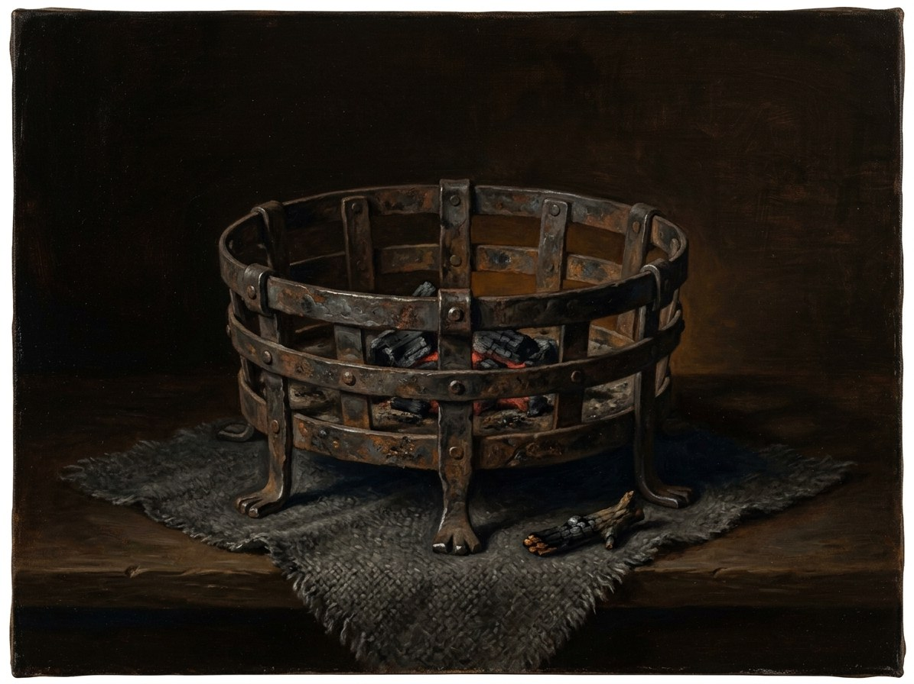

Paskutinė žarija (Šventaragis ember)¶
Relations
Caused by: Vytautas secretly lights the Last Flame
Counters: Užgesėlės (the Quenched) (1387–…) — Live ash from a kept flame feeds them; after 1387 the only kept flame is Vytautas’s.
Created by: Šventaragis valley
Held by: Vytautas (1387–1430)
Kept by: Kalvis (the Smith) (1387–1399) — Guards the lodge flame; his ash feeds it afterwards. · Spyglys (young ash-bearer) (1399–1410) — Young ash-bearer at the Trakai vault; stays behind when the lantern leaves. · Žiežirba (the Flame-Keeper, Book V POV) (1399–1430) — A boy tending the vault flame from 1399 (Book II ch. 29); sworn wolf from Kūčios 1405. Feeds the flame from Kalvis’s ash; carries the lantern in 1410.
Bearing Held to Vytautas's promise, Kol aš gyvas, paskutinė ugnis neužges. Others keep it by feeding ash; he alone is its bearer
Holders Vytautas 1387 to 27 Oct 1430, with keepers: Kalvis 1387-99; Spyglys 1399-1410; the Flame-Keeper Žiežirba (a boy at the flame from c. 1396, keeper from 1405 to 1430). Elijas keeps the vault door 1398-1411
Power The last of the Gediminid sacred flames. Anchors the Pact's remnant and the vilkatai's oath: new wolves can be made only at it. A pinch of its ash is a lamp or a weapon, and a ward against užgesėlės
Rule & cost If it goes out while he lives, the Pact's penalties fall on him. Every pinch of ash taken is a risk to him
Appearance. A palm-sized yellow flame with no smoke that does not bend in a draught, on a black ring of stone, fed in pinches with live ash. Where it burns, the wolves cannot sleep.
Origin. Lit in Feb-Mar 1387, the night Jogaila's priests put out the Šventaragis fire. Vytautas lights it from the ember he carried out of the valley, in Kęstutis's old hunting lodge beyond the Neris (Book I ch. 29).
The promise. Madness, then death, if he lets it die while he lives. Henė offers the crown for the flame (Book IV ch. 22). He refuses.
Damp. Fire workings at it cost double in spring flood (Book II ch. 2).
Moves. The lodge, 1387. The half-flooded Trakai island foundations (Book II ch. 2). The island undercroft from autumn 1392, moved by boat on the night the keys are handed over (Book II ch. 11).
The lantern. A horn lantern to Grunwald, 8 Jun 1410 to spring 1411 (Book III ch. 15, 17, 20). Back in the vault, like a bird on a nest.
Out. 27 Oct 1430, at the moment of Vytautas's death (Book IV ch. 29). The lightning-fire at his funeral cannot make wolves (Book V ch. 20).
Paskutinė žarija (Šventaragis ember)

Paskutinė žarija (Šventaragis ember) · artifact¶
Type |
artifact |
Years |
made 1387 |
Note |
Paskutinė žarija: the dying ember salvaged from the sacred hearth of Šventaragis. |
Description¶
A palm-sized yellow flame that gives no smoke and does not bend in a draught (Book II notes, Part 2). It sits on a black ring of stone, fed in pinches with live ash from the first coal. Where it burns the wolves cannot sleep, because the brotherhood may not rest under a lit roof.
Power¶
The last of the Gediminid sacred flames. While it burns the Silent Pact’s remnant and the vilkatai’s oath have a living anchor. New wolves can be made only at a living flame, so it also keeps the brotherhood alive. Pinches of its ash can serve as a weapon or a lamp.
Rule & cost¶
It is held to Vytautas’s promise “Kol aš gyvas, paskutinė ugnis neužges” (Book I ch. 3; Magic rules §6). If he lets it die while he lives, the Pact’s penalties fall on him. Every pinch of ash taken is a risk to him (Book II ch. 14). Fire’s cost doubles when it is worked in spring flood or an off-zenith crossing (II ch. 2, 11).
Origin¶
[The saga’s invention] Lit secretly on the night Jogaila’s priests extinguished the Šventaragis fire, Feb-Mar 1387 (record: Długosz). Vytautas lights it from the ember he carried out of the valley, in Kęstutis’s old hunting lodge beyond the Neris.
Arc across the books¶
Vytautas, 1387-1430; in practice he is its bearer and others are its keepers: Kalvis 1387-1399, Spyglys 1399-1410, the Flame-Keeper Žiežirba c. 1405-1430. The Karaim captain Elijas keeps the vault door (1398-1411).
Lodge, then island foundations, 1387-1392. Kalvis, whom Vytautas spared, guards the first hearth, then the half-flooded south corner of Trakai Island (Book II ch. 2).
Island undercroft, from autumn 1392. Moved by boat on the night the keys are handed over (II ch. 11). The boy Žiežirba (b. c. 1390) tends it from c. 1396. After Kalvis dies at the Vorskla, 1399 (II ch. 26), Spyglys and the boy keep it (II ch. 29).
The lantern, 8 Jun 1410-spring 1411. Žiežirba carries it in a horn lantern to Grunwald (III ch. 15, 17, 20). It returns “like a bird on a nest” (III ch. 28).
Refused crown, 1429-1430. Henė offers the crown for the flame; Vytautas refuses (IV ch. 22).
27 Oct 1430. It goes out at the moment of Vytautas’s death (IV ch. 29); the vault replay is V ch. 1. The lightning-fire given at his funeral (V ch. 2, 7) cannot make wolves (V ch. 20).
Connections¶
graph LR
ember["Paskutinė žarija (Šventaragis ember)"]
ev_flame_lit["Vytautas secretly lights the Last Flame"]
flame_keeper["Žiežirba (the Flame-Keeper, Book V POV)"]
kalvis["Kalvis (the Smith)"]
spyglys["Spyglys (young ash-bearer)"]
sventaragis["Šventaragis valley"]
uzgesiles["Užgesėlės (the Quenched)"]
vytautas["Vytautas"]
ember -->|Created by| sventaragis
ember -->|Counters| uzgesiles
vytautas -->|Holds| ember
ev_flame_lit -->|Causes| ember
kalvis -->|Keeps| ember
spyglys -->|Keeps| ember
flame_keeper -->|Keeps| ember
style ember stroke-width:3px